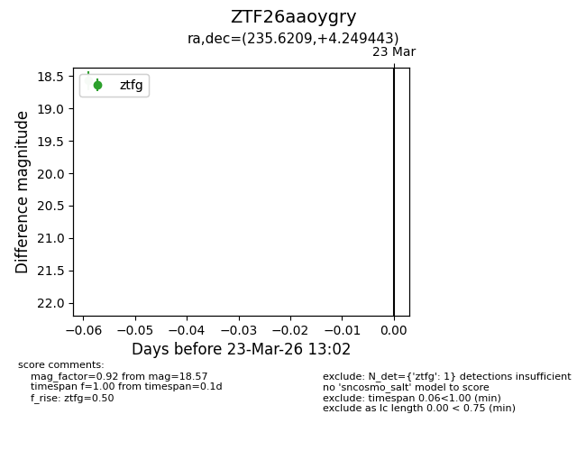
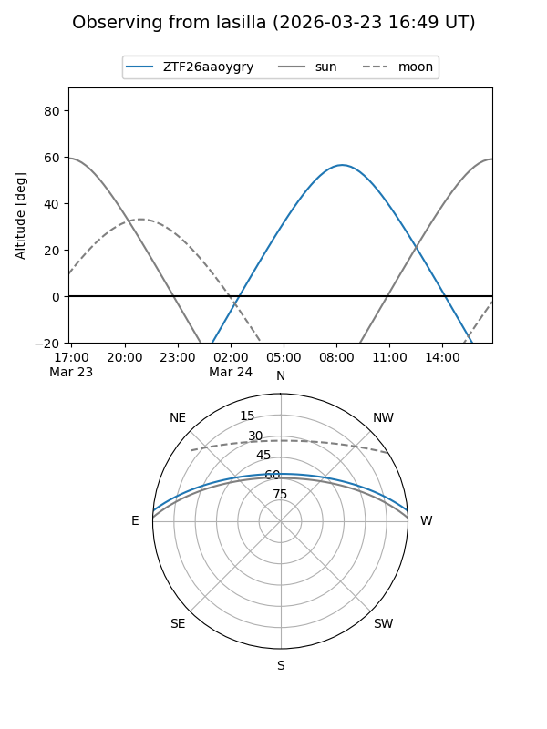
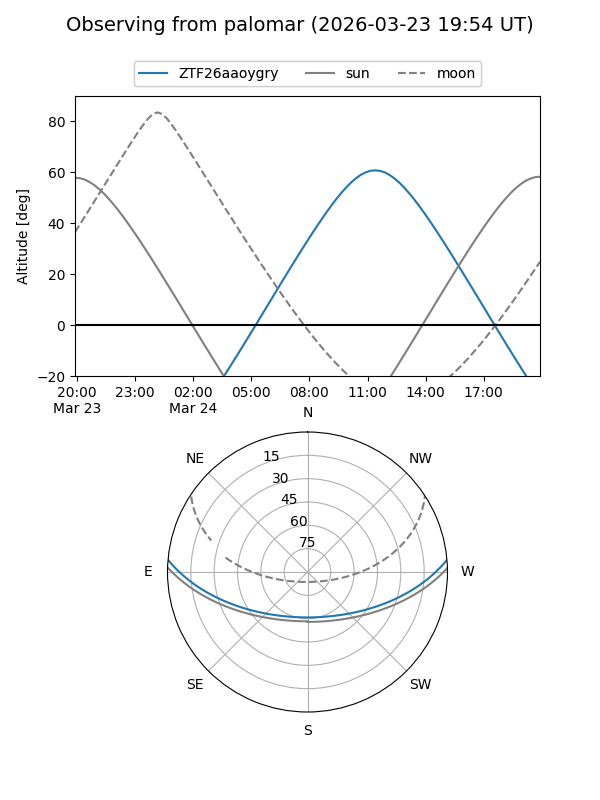

ZTF26aaoygry
Target ZTF26aaoygry at 2026-03-23 13:04
Aliases and brokers:
FINK: link
Lasair: link
ALeRCE: link
alt names
ZTF26aaoygry (ztf,fink_ztf)
Coordinates:
equatorial (ra, dec) = 235.6209,+4.24944
equatorial (HMS+DMS) = 15:42:29.01,+04:14:57.99
galactic (l, b) = (11.3440,+43.26781)
Flags:
Photometry:
last ztfg=18.57
1 ztfg detections
Lightcurve

Visibility


Additional plots